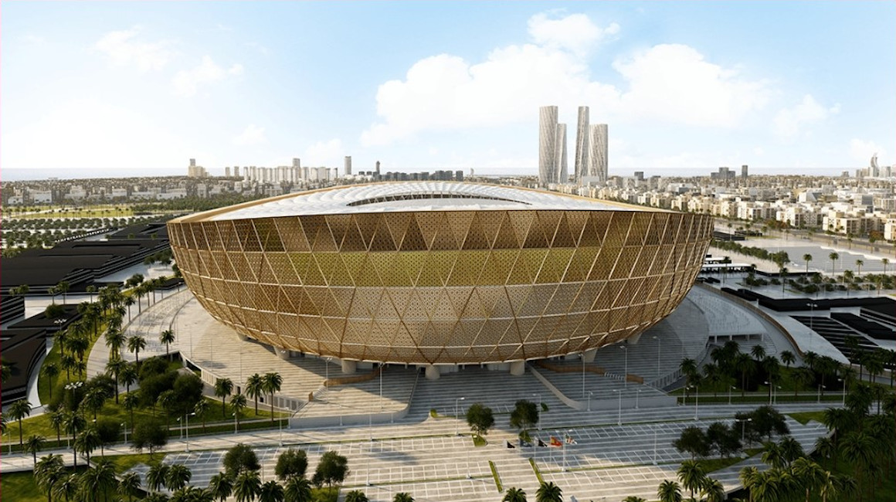
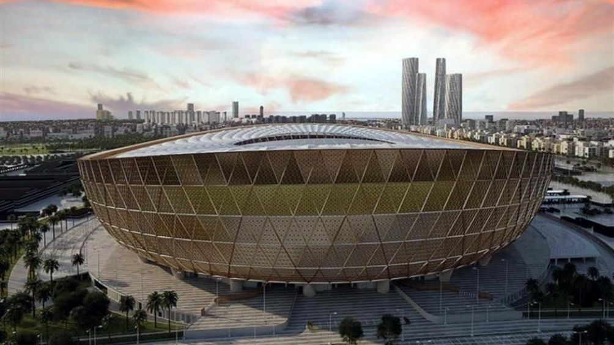
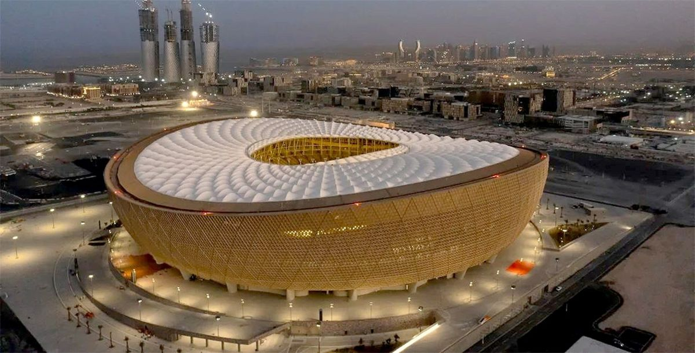
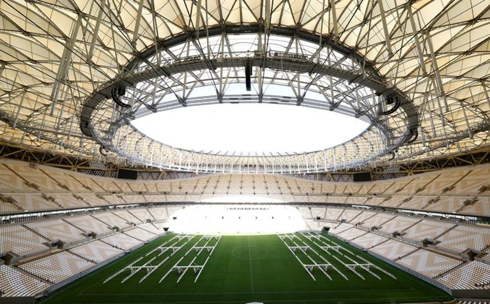
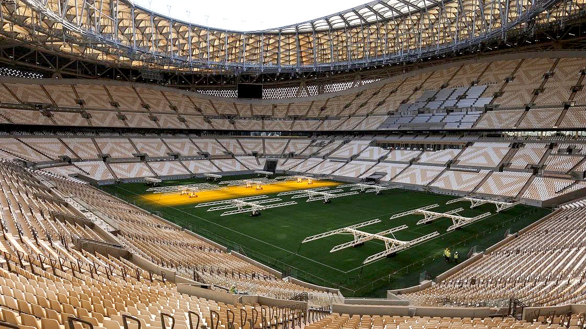

El Estadio Lusail llegará a convertirse en una sede histórica por multitud de razones. Por su capacidad, será el mayor estadio de la primera Copa Mundial de la FIFA celebrada en el Golfo y el eje central de una nueva metrópoli llamada Ciudad Lusail. Como parte del legado de la competición, la infraestructura del estadio se transformará una vez concluida la fase final mundialista en un espacio para la comunidad, con escuelas, tiendas, cafeterías, instalaciones deportivas y clínicas de salud. Con el objetivo de compartir el legado de Qatar 2022 con el mundo, el Comité Supremo para la Organización y el Legado (SC) planea que la mayor parte de los 80.000 asientos del estadio se desmontará después del certamen, y se donará a proyectos deportivos de todo el planeta. Con un diseño que alude a los motivos decorativos de los cuencos de cerámica del mundo árabe, el Estadio Lusail brindará a los aficionados un festival de fútbol en 2022. El diseño se inspira en el juego de luces y sombras que caracteriza a los faroles fanar. Su forma y fachada evocan los elaborados motivos decorativos de las vasijas y otros recipientes característicos de la edad de oro del arte y la artesanía en el mundo árabe e islámico. El estadio más grande del torneo (con un aforo de 80 000 localidades).
El Estadio Lusail albergará la final y partidos de todas las fases de la Copa Mundial de Futbol de 2022:
22 de noviembre de 2022 13:00 (Argentina vs Arabia Saudí Grupo C)
24 de noviembre de 2022 22:00 (Brasil vs Serbia Grupo G)
26 de noviembre de 2022 22:00 (Argentina vs México Grupo C)
28 de noviembre de 2022 22:00 (Portugal vs Uruguay Grupo H)
30 de noviembre de 2022 22:00 (Arabia Saudí-México Grupo C)
2 de diciembre de 2022 22:00 (Camerún-Brasil Grupo G )
5 de diciembre de 2022 22:00 (Octavos de final)
9 de diciembre 22:00 (Cuartos de final)
13 de diciembre 22:00 (Semifinal)
18 de diciembre 18:00 (Final)